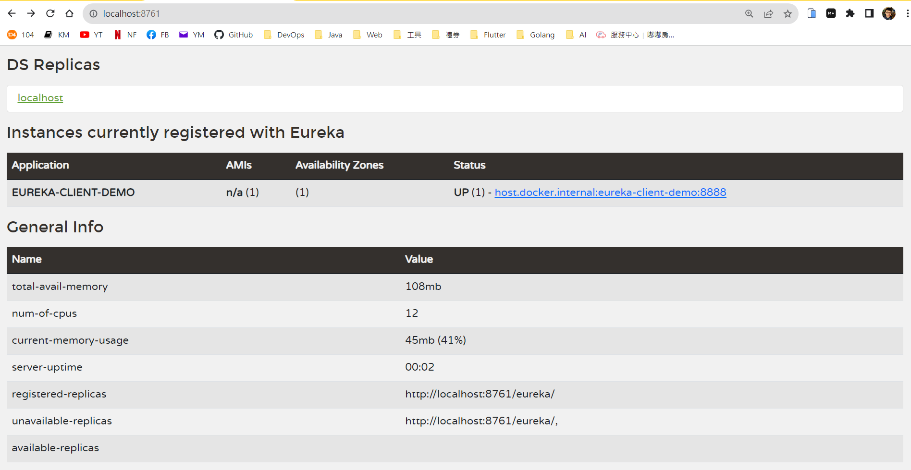
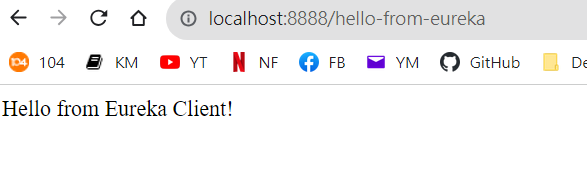

Spring Cloud - Eureka Server
Spring Cloud Eureka Server
程式碼：
- Eureka Server：https://github.com/aweit-zhu/SpringCloudEurekaServer
- Eureka Client：https://github.com/aweit-zhu/SpringCloudEurekaClient
Eureka Server

- Service Registration: Microservices that want to be discovered by other services register themselves with the Eureka Server. Each microservice instance is identified by a unique application name and instance ID.
- Service Discovery: Services that need to communicate with other services can query the Eureka Server to obtain the network location (host and port) of the desired service instance. Eureka Server maintains a registry of available service instances and provides this information to the clients.
- Heartbeat Monitoring: Eureka Server continuously checks the health of registered service instances by sending periodic heartbeat requests. If a service instance fails to respond to the heartbeat requests within a certain time period, it is considered offline and removed from the registry.
- Load Balancing: Eureka Server can also act as a load balancer by providing a list of available service instances for a particular service. Clients can use this information to implement load balancing strategies, such as round-robin or random selection, when making requests to the service.
- High Availability: Multiple instances of the Eureka Server can be deployed in a cluster to ensure high availability and fault tolerance. Each Eureka Server instance in the cluster keeps its own local registry, and they replicate and synchronize the registration information among themselves.
- Integration with Spring Cloud: Spring Cloud provides integration with Eureka Server through the
spring-cloud-starter-netflix-eureka-serverdependency. It simplifies the setup and configuration of Eureka Server in a Spring Boot application.
Eureka Server - Code
- pom.xml
<?xml version="1.0" encoding="UTF-8"?>
<project xmlns="http://maven.apache.org/POM/4.0.0"
xmlns:xsi="http://www.w3.org/2001/XMLSchema-instance"
xsi:schemaLocation="http://maven.apache.org/POM/4.0.0 https://maven.apache.org/xsd/maven-4.0.0.xsd">
<modelVersion>4.0.0</modelVersion>
<parent>
<groupId>org.springframework.boot</groupId>
<artifactId>spring-boot-starter-parent</artifactId>
<version>2.7.14</version>
<relativePath /> <!-- lookup parent from repository -->
</parent>
<groupId>com.example</groupId>
<artifactId>eureka-server</artifactId>
<version>1.0.0</version>
<name>SpringCloudEurekaServer</name>
<description>Eureka Server using Spring Boot</description>
<properties>
<java.version>11</java.version>
<spring-cloud.version>2021.0.8</spring-cloud.version>
</properties>
<dependencies>
<dependency>
<groupId>org.springframework.cloud</groupId>
<artifactId>spring-cloud-starter-netflix-eureka-server</artifactId>
</dependency>
<dependency>
<groupId>org.springframework.boot</groupId>
<artifactId>spring-boot-devtools</artifactId>
<scope>runtime</scope>
<optional>true</optional>
</dependency>
<dependency>
<groupId>org.projectlombok</groupId>
<artifactId>lombok</artifactId>
<optional>true</optional>
</dependency>
<dependency>
<groupId>org.springframework.boot</groupId>
<artifactId>spring-boot-starter-test</artifactId>
<scope>test</scope>
</dependency>
</dependencies>
<dependencyManagement>
<dependencies>
<dependency>
<groupId>org.springframework.cloud</groupId>
<artifactId>spring-cloud-dependencies</artifactId>
<version>${spring-cloud.version}</version>
<type>pom</type>
<scope>import</scope>
</dependency>
</dependencies>
</dependencyManagement>
<build>
<plugins>
<plugin>
<groupId>org.springframework.boot</groupId>
<artifactId>spring-boot-maven-plugin</artifactId>
<configuration>
<excludes>
<exclude>
<groupId>org.projectlombok</groupId>
<artifactId>lombok</artifactId>
</exclude>
</excludes>
</configuration>
</plugin>
</plugins>
</build>
</project>
- application.yaml
server:
port: 8761
eureka:
client:
register-with-eureka: false
fetch-registry: false
- Application.java：新增 @EnableEurekaServer
import org.springframework.boot.SpringApplication;
import org.springframework.boot.autoconfigure.SpringBootApplication;
import org.springframework.cloud.netflix.eureka.server.EnableEurekaServer;
@SpringBootApplication
@EnableEurekaServer
public class SpringCloudEurekaServerApplication {
public static void main(String[] args) {
SpringApplication.run(SpringCloudEurekaServerApplication.class, args);
}
}
- 啟動，並開啟瀏覽器，輸入：http://localhost:8761/

Eureka Client - Code
- pom.xml
<?xml version="1.0" encoding="UTF-8"?>
<project xmlns="http://maven.apache.org/POM/4.0.0"
xmlns:xsi="http://www.w3.org/2001/XMLSchema-instance"
xsi:schemaLocation="http://maven.apache.org/POM/4.0.0 https://maven.apache.org/xsd/maven-4.0.0.xsd">
<modelVersion>4.0.0</modelVersion>
<parent>
<groupId>org.springframework.boot</groupId>
<artifactId>spring-boot-starter-parent</artifactId>
<version>2.7.14</version>
<relativePath /> <!-- lookup parent from repository -->
</parent>
<groupId>com.example</groupId>
<artifactId>eureka-client</artifactId>
<version>1.0.0</version>
<name>SpringCloudEurekaClient</name>
<description>Eureka Client using Spring Boot</description>
<properties>
<java.version>11</java.version>
<spring-cloud.version>2021.0.8</spring-cloud.version>
</properties>
<dependencies>
<dependency>
<groupId>org.springframework.boot</groupId>
<artifactId>spring-boot-starter-web</artifactId>
</dependency>
<dependency>
<groupId>org.springframework.cloud</groupId>
<artifactId>spring-cloud-starter-netflix-eureka-client</artifactId>
</dependency>
<dependency>
<groupId>org.springframework.boot</groupId>
<artifactId>spring-boot-devtools</artifactId>
<scope>runtime</scope>
<optional>true</optional>
</dependency>
<dependency>
<groupId>org.projectlombok</groupId>
<artifactId>lombok</artifactId>
<optional>true</optional>
</dependency>
<dependency>
<groupId>org.springframework.boot</groupId>
<artifactId>spring-boot-starter-test</artifactId>
<scope>test</scope>
</dependency>
<!-- Spring Cloud Config Client -->
<dependency>
<groupId>org.springframework.cloud</groupId>
<artifactId>spring-cloud-config-client</artifactId>
</dependency>
<dependency>
<groupId>org.springframework.boot</groupId>
<artifactId>spring-boot-starter-actuator</artifactId>
</dependency>
</dependencies>
<dependencyManagement>
<dependencies>
<dependency>
<groupId>org.springframework.cloud</groupId>
<artifactId>spring-cloud-dependencies</artifactId>
<version>${spring-cloud.version}</version>
<type>pom</type>
<scope>import</scope>
</dependency>
</dependencies>
</dependencyManagement>
<build>
<plugins>
<plugin>
<groupId>org.springframework.boot</groupId>
<artifactId>spring-boot-maven-plugin</artifactId>
<configuration>
<excludes>
<exclude>
<groupId>org.projectlombok</groupId>
<artifactId>lombok</artifactId>
</exclude>
</excludes>
</configuration>
</plugin>
</plugins>
</build>
</project>
- application.properties
server.port=8888
spring.application.name=eureka-client-demo
eureka.client.service-url.defaultZone=http://localhost:8761/eureka
management.endpoints.web.exposure.include=*
- Application
@SpringBootApplication
@EnableDiscoveryClient
public class SpringCloudEurekaClientApplication {
public static void main(String[] args) {
SpringApplication.run(SpringCloudEurekaClientApplication.class, args);
}
}
- RestTemplateConfig.java
import org.springframework.context.annotation.Bean;
import org.springframework.context.annotation.Configuration;
import org.springframework.web.client.RestTemplate;
@Configuration
public class RestTemplateConfig {
@Bean
public RestTemplate restTemplate() {
return new RestTemplate();
}
}
- EurekaClientDemoClient.java：eureka-client-demo 為服務註冊的名字。
import java.util.List;
import org.springframework.beans.factory.annotation.Autowired;
import org.springframework.cloud.client.ServiceInstance;
import org.springframework.cloud.client.discovery.DiscoveryClient;
import org.springframework.stereotype.Component;
@Component
public class EurekaClientDemoClient {
@Autowired
private DiscoveryClient discoveryClient;
public String getServiceUrl() {
// Retrieve the instances of the service by application name
List<ServiceInstance> instances = discoveryClient.getInstances("eureka-client-demo");
// Choose one of the instances (e.g., the first one)
ServiceInstance instance = instances.get(0);
// Get the URL of the service instance
String serviceUrl = instance.getUri().toString();
return serviceUrl;
}
}
- HelloController.java
@GetMapping("/hello")、@GetMapping("/hello-from-eureka") 皆為註冊到 Eureka 的方式，和原本的寫法一模一樣。
@GetMapping("/hello-from-eureka") 是為了要測試是否可以成功呼叫到Eureka 上的服務。serviceUrl就是 Eureka 的服務。
import org.springframework.beans.factory.annotation.Autowired;
import org.springframework.web.bind.annotation.GetMapping;
import org.springframework.web.bind.annotation.RestController;
import org.springframework.web.client.RestTemplate;
import com.example.service.EurekaClientDemoClient;
@RestController
public class HelloController {
@Autowired
private RestTemplate restTemplate;
@Autowired
private EurekaClientDemoClient client;
@GetMapping("/hello")
public String hello() {
return "Hello from Eureka Client!";
}
@GetMapping("/hello-from-eureka")
public String hello2() {
String serviceUrl = client.getServiceUrl();
String helloUrl = serviceUrl + "/hello";
String response = restTemplate.getForObject(helloUrl, String.class);
return response;
}
}
Test
http://localhost:8888/hello-from-eureka
